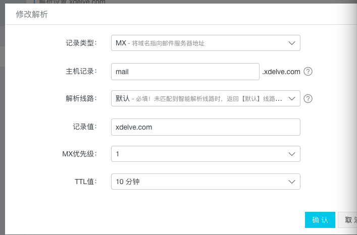
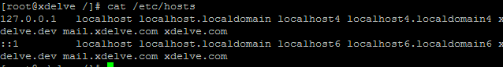

配置自己的邮箱服务器，我使用的方法是yum直接安装sendmail。
安装sendmail
yum install sendmail mailx -y
然后启动sendmail守护进程：
sendmail -bd
此时已经可以使用mail命令发送邮件了：
echo "hello"|mail -s testmail admin@xdelve.com
指定发送方发送邮件
echo "<h1>hello</h1>"|mail -s testmail -r admin@xdelve.com 1696292264@qq.com
如果仅用于局域网内的邮件收发，那么到这一步已经可以正常工作了。其他人要发邮件，目标邮箱 user@ip 就可以发出去了。
如果需要作为外网的接收邮件服务器使用，则还需要配置dns的MX记录。因为sendmail本身只负责监听端口收发邮件，未添加MX记录时，其他邮件服务器无法解析域名对应的服务器了。（不过直接用ip发是可以的，但应该没人会这么做）
添加MX记录在买域名的网站上可以在线编辑，如果不支持在线搞么也不要买了他们家的域名了。

修改/etc/mail/sendmail.mc，把下面这两行之前的dnl去掉
DAEMON_OPTIONS(`Port=smtp,Addr=0.0.0.0, Name=MTA)dnl
DAEMON_OPTIONS(`Port=submission, Name=MSA, M=Ea)dnl执行
m4 /etc/mail/sendmail.mc>/etc/mail/sendmail.cf
然后重启sendmail。ps -ef|grep sendmail找到pid然后kill，再sendmail -bd。
2017-12-04补充
如果遇到启动慢或者发送慢的情况，多半是sendmail解析发送方域名的问题，可以在/etc/hosts里把发送方的域名添加到 127.0.0.1这行后面。看上去像这样的：

重要！ 切记开启服务器25端口，否则将无法收到邮件！
相关文档
随便看看